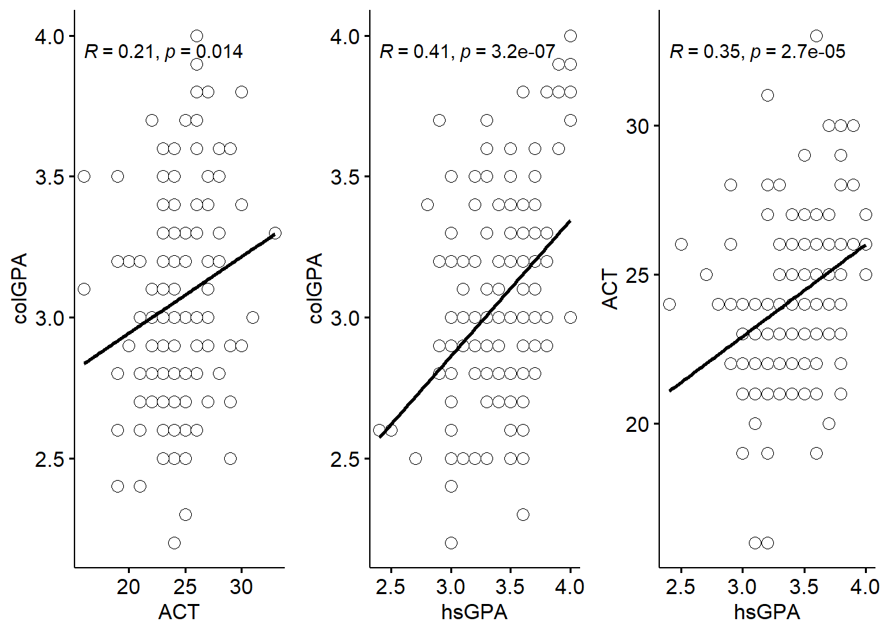
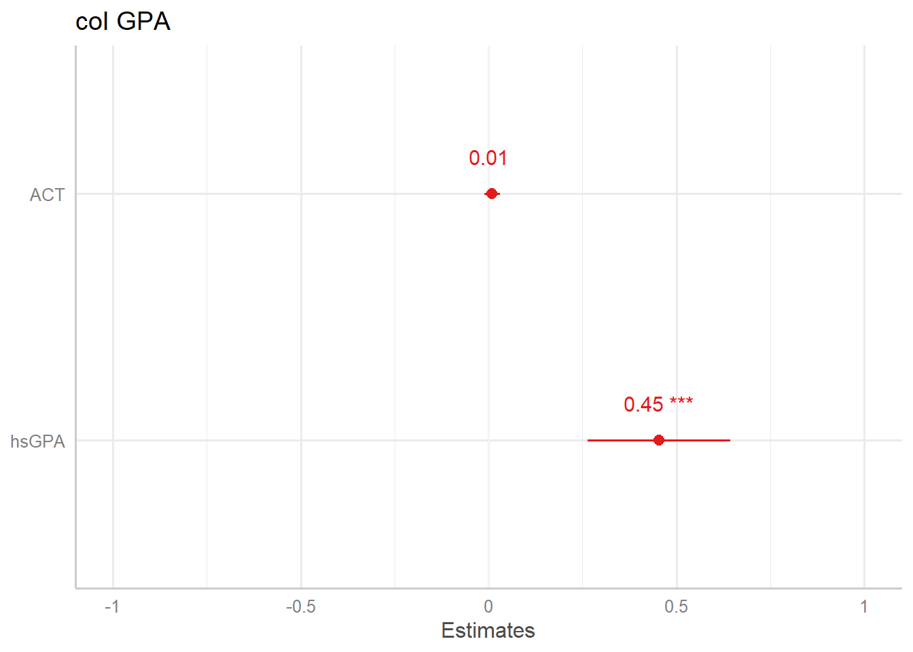
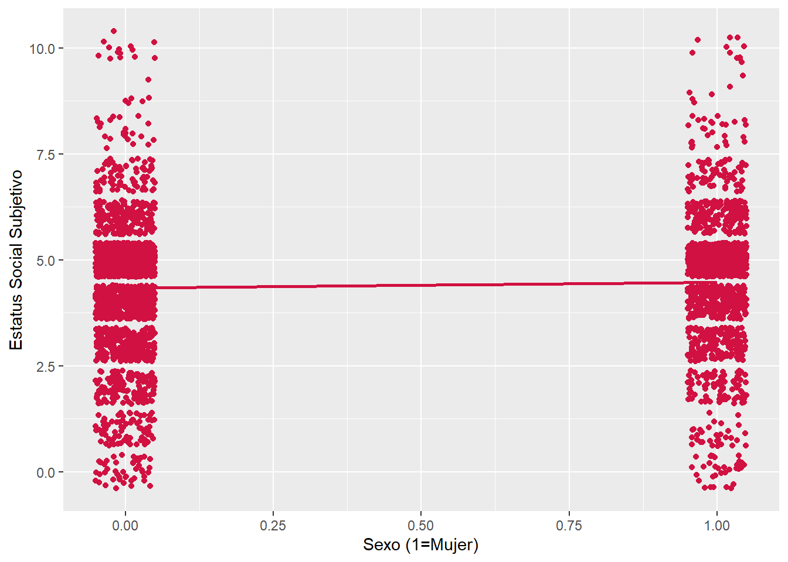
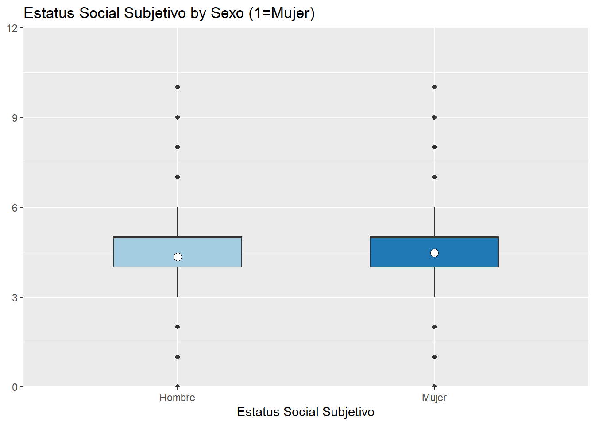
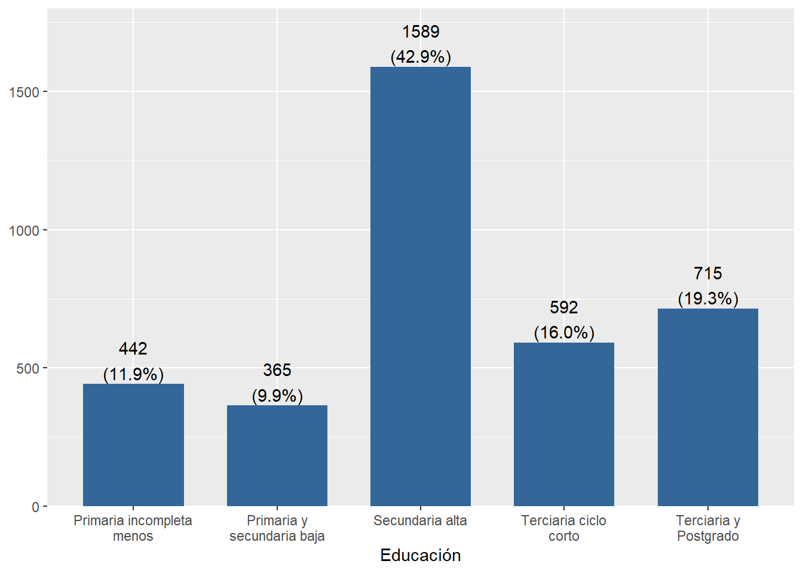

pacman::p_load(ggpubr, #graficos
dplyr, #manipulacion de datos
sjPlot, #tablas
gridExtra, #unir graficos
texreg, #mostrar regresion multiple
summarytools, #estadisticos descriptivos
wooldridge) #paquete con los ejemplos del libro
library(wooldridge)Práctico 02. Regresión lineal múltiple y predictores categóricos
Métodos estadísticos para Ciencias Sociales III
Objetivo de la práctica
En esta práctica nos enfocaremos en el significado de las parcializaciones en la regresión múltiple. Para ello utilizaremos el ejemplo 3.1 de Wooldrige (2010) cap. 3 (Análisis de regresion múltiple) (p.68-80) sobre las determinantes del promedio en la universidad.
Librerías
Datos
Los datos a utilizar corresponden a la base de datos gpa1 que incluye una muestra de 141 estudiantes de una universidad. La base contiene variables:
\(colGPA\): promedio general de calificaciones de la universidad, en escala de 0 a 4 puntos.
\(hsGPA\) : promedio general de calificaciones en la enseñanza media, en escala de 0 a 4 puntos
\(ACT\) : puntaje en el examen de admisión a la universidad, que va de 16 a 33 puntos
Primero, se cargará la base de datos que contiene la librería wooldrige y se seleccionarán las variables señaladas
data('gpa1') # Cargar base de datos
gpa1 <- dplyr::select(gpa1, colGPA, hsGPA, ACT) #Seleccion de variablesExplorar base de datos
A partir de la siguiente tabla se obtienen estadísticos descriptivos que luego serán relevantes para la interpretación de nuestros modelos.
view(dfSummary(gpa1, headings = FALSE, method = "render"))| No | Variable | Stats / Values | Freqs (% of Valid) | Graph | Valid | Missing | ||||
|---|---|---|---|---|---|---|---|---|---|---|
| 1 | colGPA [numeric] |
|
19 distinct values |  |
141 (100.0%) | 0 (0.0%) | ||||
| 2 | hsGPA [numeric] |
|
16 distinct values |  |
141 (100.0%) | 0 (0.0%) | ||||
| 3 | ACT [integer] |
|
15 distinct values |  |
141 (100.0%) | 0 (0.0%) |
Generated by summarytools 1.0.1 (R version 4.3.2)
2025-08-18
Relacion entre variables
Se grafican la relación entre las variables que determinarían \(colGPA\) para comparar sus distribuciones y sus pendientes (\(b\)) de sus regresiones simples. A su vez, se grafica un tercer gráfico que muestra la correlación entre las variables independientes.
#Grafico x1 = ACT y= colGPA
gact <- ggscatter(gpa1, x = "ACT", y = "colGPA",
shape = 21, size = 3, # Forma y tamaño de puntos
add = "reg.line", #Agregar recta de regresion
cor.coef = TRUE)# Agregar coeficiente correlacion
#Grafico x2 = hsGPA y= colGPA
ghsGPA <- ggscatter(gpa1, x = "hsGPA", y = "colGPA",
shape = 21, size = 3,
add = "reg.line",
cor.coef = TRUE)
#Grafico x2 = hsGPA x1 = ACT
gact_hs <- ggscatter(gpa1, x = "hsGPA", y = "ACT",
shape = 21, size = 3,
add = "reg.line",
cor.coef = TRUE)
grid.arrange(gact, ghsGPA, gact_hs, nrow = 1) # Unir graficos
Con el gráfico anterior podemos notar dos puntos relevantes:
Si bien ambas variables tienen una asociación positiva con \(colGPA\), el tamaño efecto de esta relación es distinta. Incluso, \(hsGPA\) que no había sido considerada en nuestro modelo inicial, tiene una asociación más grande con nuestra variable dependiente.
Como es de esperar, existe una relación entre las calificaciones en la enseñanza media (\(hsGPA\)) y el puntaje en la prueba de admisión (\(ACT\)). Específicamente, ambas variables tienen una asociación positiva de 0.35.
En la práctica 5 nos preguntamos ¿cómo incide \(ACT\) y \(hsGPA\) en conjunto sobre \(colGPA\)?, sin profundizar en qué implica que nuestros predictores de \(colGPA\) estén correlacionados. Retomemos nuevamente nuestro modelo
Modelo de regresión multiple
Para estimar el modelo de regresión multiple se debe realizar el mismo procedimiento de la regresión simple, solo que ahora deben señalar un (+) y el segundo predictor
Regresión múltiple modelo <- lm(y ~ x1 + x2 , data = data)
Por fines de comparación, se estimaran primero dos regresiones simples con cada predictor, y luego la regresión múltiple en el Modelo 3:
col_actmodel<-lm(colGPA ~ ACT, data=gpa1)
col_hsmodel<-lm(colGPA ~ hsGPA, data=gpa1)
col_model <- lm(colGPA ~ ACT + hsGPA, data = gpa1)sjPlot::tab_model(list(col_actmodel, col_hsmodel,col_model), show.ci=FALSE, p.style = "stars", dv.labels = c("Modelo 1", "Modelo 2", "Modelo 3"),string.pred = "Predictores", string.est = "β")| Modelo 1 | Modelo 2 | Modelo 3 | |
| Predictores | β | β | β |
| (Intercept) | 2.40 *** | 1.42 *** | 1.29 *** |
| ACT | 0.03 * | 0.01 | |
| hsGPA | 0.48 *** | 0.45 *** | |
| Observations | 141 | 141 | 141 |
| R2 / R2 adjusted | 0.043 / 0.036 | 0.172 / 0.166 | 0.176 / 0.164 |
| * p<0.05 ** p<0.01 *** p<0.001 | |||
\[\widehat{colGPA} = 1.29 +0.01 \dot\ ACT + 0.453\dot\ hsGPA \]
Interpretación
¿Cómo se interpreta este cuadro con los 3 modelos de regresión?
El modelo 1 estima que por cada punto que aumenta el examen de admisión \(ACT\), \(colGPA\) aumentaráen 0.03 puntos.
El modelo 2 estima que por cada punto que aumenta las notas en enseñanza media \(hsGPA\), \(colGPA\) aumentará en 0.48 puntos.
El modelo 3 estima \(colGPA\) considerando en conjunto ambas variables. Por un lado, por cada punto que aumenta el examen de admisión \(ACT\), \(colGPA\) aumentaráen 0.01 puntos, manteniendo \(hsGPA\) constante Por otro, por cada punto que aumenta las notas en enseñanza media \(hsGPA\), \(colGPA\) aumentará en 0.45 puntos, manteniendo \(ACT\) constante.
¿Porqué se alteran los coeficientes de regresión?
Como vimos en los gráficos de dispersión, existe una correlación entre nuestros predictores: el puntaje en \(ACT\) está asociado con las notas de enseñanza media \(hsGPA\).
Cuando se incorporan más variables en el modelo se descuenta este elemento en común que tienen las variables independientes. Por ello no solo los coefientes de regresión se ajustan en presencia de otras variables (\(hsGPA\) disminuyó de 0.48 a 0.45 y \(ACT\) de 0.03 a 0.01), sino que también el ajuste del modelo cambia (\(R^2ajustado\) es el estadístico más óptimo para identificar ello, pues como vimos en la práctica 5 \(R^2\) sobreestima la bondad de ajuste).
Parcialización
La forma de hacer este procedimiento de “mantener constante” el efecto de la otra variable se llama parcialización. Este procedimiento implica sacar la covarianza común entre mis variables independientes, es decir, lo que tienen en común \(hsGPA\) y \(ACT\)
Se habla de efectos parciales porque se estiman las regresiones solo con una de las variables independientes. Por ejemplo, ¿Cómo se predice \(colGPA\) en función \(ACT\), despejando el efecto de \(hsGPA\)?
En fórmula podemos ver que las estimaciones de $ b_{1}$ y $ b_{2}$ se interpretan como efectos parciales, de manera que dados los cambios en \(ACT\) y \(hsGPA\) se puede obtener un cambio predicho para \(colGPA\).
\[\triangle{colGPA} = b_{1}\triangle{ACT} + b_{2}\triangle{hsGPA} \]
Pero cuando \(hsGPA\) se mantiene constante, de manera que \(\triangle{hsGPA}\) = 0, se obtiene entonces:
\[\triangle{colGPA} = b_{1}\triangle{ACT} \]
Pero cuando \(ACT\) se mantiene constante, de manera que \(\triangle{ACT}\) = 0, se obtiene entonces:
\[\triangle{colGPA} = b_{2}\triangle{hsGPA} \]
Parcializar \(ACT\) de \(hsGPA\)
¿Cómo determinar cuál es el (a) elemento común entre ambas variables y (b) extraer solamente aquello que no comparten?
Para ello se realiza (a) una regresión simple donde los predictores son las variables del modelo (\(ACT\) dependiente y \(hsGPA\) independiente) y (b) en donde a la predicción de \(ACT\) hay asociado un residuo.
En otras palabras, el \(b\) de esta regresión es todo lo que comparte \(ACT\) y \(hsGPA\). Mientras que el residuo es todo lo de \(ACT\) que no es explicado por \(hsGPA\). En síntesis, es con lo que nos deberíamos quedar en nuestros modelos de regresión múltiple al estimar el \(b_{1}\) de \(ACT\).
Paso 1: Estimar modelo
model_act_hs = lm(ACT ~ hsGPA, data = gpa1) #Crear regresion con predictores
coef(model_act_hs)(Intercept) hsGPA
13.696763 3.074331 En consecuencia tenemos que \[\widehat{ACT} = 13.69 + 3.07{hsGPA} \]
Paso 2: calcular valores predichos y residuos
Sabemos que si tenemos un modelo de regresión podemos también obtener los residuos. Recordemos ¿qué es un residuo? Un residuo es la diferencia entre el valor observado y el valor predicho
fit_act_hs=fitted.values(model_act_hs) # Calcular valores predichos
res_act_hs=residuals(model_act_hs) #Calcular residuos
gpa1=cbind(gpa1, fit_act_hs,res_act_hs) # Unir columna de residuos y valores predichos a base de datos
head(gpa1) #Mostrar los primeros elementos de la base de datos colGPA hsGPA ACT fit_act_hs res_act_hs
1 3.0 3.0 21 22.91975 -1.9197550
2 3.4 3.2 24 23.53462 0.4653787
3 3.0 3.6 26 24.76435 1.2356469
4 3.5 3.5 27 24.45692 2.5430797
5 3.6 3.9 28 25.68665 2.3133472
6 3.0 3.4 25 24.14949 0.8505125Podemos ver en res_act_hs la varianza no explicada de \(hsGPA\) sobre \(ACT\).
Paso 3: Crear regresión con variable parcializada
Ahora si hacemos la regresión con la variable res_act_hs notaremos que obtendremos el mismo \(b_{1}\) de la regresión del modelo múltiple (modelo 3) pero por medio de una regresión simple (modelo 4).
act_hs_model <- lm(colGPA ~ res_act_hs, data = gpa1) # Estimar regresión simple con parcialización de ACTsjPlot::tab_model(list(col_actmodel, col_hsmodel,col_model, act_hs_model), show.ci=FALSE, p.style = "stars", dv.labels = c("Modelo 1", "Modelo 2", "Modelo 3", "Modelo 4"),string.pred = "Predictores", string.est = "β")| Modelo 1 | Modelo 2 | Modelo 3 | Modelo 4 | |
| Predictores | β | β | β | β |
| (Intercept) | 2.40 *** | 1.42 *** | 1.29 *** | 3.06 *** |
| ACT | 0.03 * | 0.01 | ||
| hsGPA | 0.48 *** | 0.45 *** | ||
| res act hs | 0.01 | |||
| Observations | 141 | 141 | 141 | 141 |
| R2 / R2 adjusted | 0.043 / 0.036 | 0.172 / 0.166 | 0.176 / 0.164 | 0.005 / -0.003 |
| * p<0.05 ** p<0.01 *** p<0.001 | ||||
Lo que tengo en ese modelo es la variable puntaje en el examen de admisión \(ACT\) sin las notas de enseñanza media \(hsGPA\). Lo mismo se podría realizar con la parcialización de \(hsGPA\).
Este procedimiento de extraer el elemento común entre las variables es el que hace “tras bambalinas” la regresión múltiple. Lo importante es notar que en la regresión múltiple todos los predictores están parcializados del resto de los predictores. Se han “limpiado” de los efectos de las otras variables el resto de las variables del modelo.
Control estadístico
¿En cuál variable me fijo para la interpretación? Podemos graficar los coeficientes de la regresión de modo de ver el impacto que tienen cada una de las variables sobre \(colGPA\)
plot_model(col_model, show.values = TRUE)+ theme_sjplot()
Como podemos ver el efecto que tiene \(hsGPA\) sobre \(colGPA\), controlando por \(ACT\), es mucho mayor que el que tiene \(ACT\) parcializado por \(colGPA\). Sin embargo, esto nada nos dice de qué variable enfatizar: esto dependen de las hipótesis que queremos probar con nuestros modelos.
¿Qué significa mantener todos los demás factores constantes?
En la interpretación del modelo vimos que los coeficientes de regresión nos permiten entender el efecto de \(ACT\) sobre \(colGPA\), manteniendo \(hsGPA\) constante. También, \(hsGPA\) sobre \(colGPA\), manteniendo \(ACT\) constante.
La regresión múltiple nos proporciona esta interpretación “manteniendo constante las variables”, incluso cuando en nuestros mismos datos no hayan sido recolectados considerando que algunas variables se mantengan constantes. Esto es lo que hemos llamado una interpretación de efecto parcial de los coeficientes de regresión. Esto no implica que se haya encuestado personas con el mismo \(hsGPA\) pero con puntuaciones en \(ACT\). Para obtener los datos no se pusieron restricciones sobre los valores muestrales de \(hsGPA\) o de \(ACT\). Más bien, la regresión múltiple permite imitar esta situación “constante” sin restringir los valores de ninguna de las variables independientes.
Tema adicional: Predictores categóricos
Es esta práctica vamos a aprender a trabajar e interpretar predictores categóricos en la regresión.
Hasta ahora hemos trabajado solamente con predictores a los que asumimos un nivel de medición continua (es decir, al menos intervalar). ¿Qué sucede con predictores donde se asume un distinto nivel de medición, como nominal u ordinal? En general este tipo de predictores requiere una interpretación y tratamiento distinto que los predictores continuos.
Existen dos tipos de predictores categóricos: dicotómicos (dummys) y ordinales.
Predictores dicotómicos
Las variables dicotómicas son aquellas variables nominales u ordinales que poseen solo dos categorías de respuesta, por ejemplo hombre/mujer, sano/enfermo, deportista/sedentario.
La inclusión de estas variables en un modelo de regresión no requiere un tratamiento especial, solo hay que considerar que su interpretación tiene un sentido distinto. A continuación, veremos un ejemplo respecto a cómo predictores categóricos (de dos o más niveles) permiten modelar el Estatus Social Subjetivo
Librerías
pacman::p_load(dplyr, #manipulacion de datos
sjPlot, #tablas
summarytools, #estadisticos descriptivos
fastDummies, # Crear variable dummy
sjlabelled, #etiquetas variables
coefplot # graficos de coeficientes
)Datos
Primero, se cargará la base de datos
load(url("https://multivariada.netlify.app/assignment/data/proc/ELSOC_ess.RData")) # Cargar base de datosLos datos a utilizar corresponden a la base de datos ELSOC 2018 que incluye una muestra de 3784 mujeres y hombres adultos entre 18 y 75 años.
Variables
[
ess]: “Estatus Social Subjetivo: Donde se ubicaria ud. en la sociedad chilena” (0 = el nivel mas bajo; 10 = el nivel mas alto)[
edcine]: ¿Cuál es su nivel educacional? Indique el tipo de estudio actual (si estudia actualmente) o el último tipo aprobado (si no estudia actualmente) - CINE 2011 (UNESCO).[
edad]: ¿Cuáles su edad? (años cumplidos).
view_df(elsoc_18,encoding = "")| ID | Name | Label | Values | Value Labels |
| 1 | ess | Estatus Social Subjetivo | 0 1 2 3 4 5 6 7 8 9 10 |
0 El nivel mas bajo 1 2 3 4 5 6 7 8 9 10 El nivel mas alto |
| 2 | sexo | Sexo (1=Mujer) | 0 1 |
Hombre Mujer |
| 3 | edad | Edad | range: 18-90 | |
| 4 | edcine | Educación | 1 2 3 4 5 |
Primaria incompleta menos Primaria y secundaria baja Secundaria alta Terciaria ciclo corto Terciaria y Postgrado |
Explorar base de datos
A partir de la siguiente tabla se obtienen estadísticos descriptivos que luego serán relevantes para la interpretación de nuestros modelos.
view(dfSummary(elsoc_18, headings = FALSE, method = "render"))| No | Variable | Label | Stats / Values | Freqs (% of Valid) | Graph | Valid | Missing | ||||||||||||||||||||||||||||||||||
|---|---|---|---|---|---|---|---|---|---|---|---|---|---|---|---|---|---|---|---|---|---|---|---|---|---|---|---|---|---|---|---|---|---|---|---|---|---|---|---|---|---|
| 1 | ess [numeric] | Estatus Social Subjetivo |
|
11 distinct values |  |
3703 (100.0%) | 0 (0.0%) | ||||||||||||||||||||||||||||||||||
| 2 | sexo [numeric] | Sexo (1=Mujer) |
|
|
 |
3703 (100.0%) | 0 (0.0%) | ||||||||||||||||||||||||||||||||||
| 3 | edad [numeric] | Edad |
|
70 distinct values |  |
3703 (100.0%) | 0 (0.0%) | ||||||||||||||||||||||||||||||||||
| 4 | edcine [numeric] | Educación |
|
|
 |
3703 (100.0%) | 0 (0.0%) |
Generated by summarytools 1.0.1 (R version 4.3.2)
2025-08-18
Relación entre variables
Visualizar la asociación entre variables puede ser informativo. Sin embargo, en ocasiones es necesario prestar mayor atención al tipo de gráfico que utilizamos para esto. Por ejemplo, veamos un scatter de Estatus social Subjetivo \(Y_\text{estatus}\) con sexo como independiente \(X_\text{sexo}\) para comparar sus distribuciones y sus pendientes
plot_scatter(data = elsoc_18,x = sexo,y = ess,fit.grps = "lm")
El scatterplot no es muy informativo debido a que nuestra variable independiente solamente posee dos niveles, de modo tal que la distribución de Estatus Social Subjetivo se separa en dos grandes grupos. Por esta razón, una alternativa para visualizar la distribución es elaborar un gráfico de cajas para ambas categorías:
plot_grpfrq(var.cnt = elsoc_18$ess,var.grp = elsoc_18$sexo,type = "box")
En este sentido, al tener solamente dos niveles en los valores de la variable X: 0 (Hombre) y 1 (Mujer). Obtenemos solamente dos medias condicionales.
Entonces, si calculamos el promedio simple para Estatus Social Subjetivo por sexo tenemos:
elsoc_18 %>%
group_by(sexo) %>%
summarise(mean_ess=mean(ess,na.rm = T))# A tibble: 2 × 2
sexo mean_ess
<dbl> <dbl>
1 0 4.34
2 1 4.47Segun esto el promedio para las mujeres es de 4.47 puntos en la escala de Estatus Social Subjetivo, mientras para los hombres es de 4.34.
Realizando ahora la regresión:
reg1<-lm(ess ~ sexo, data=elsoc_18)sjPlot::tab_model(list(reg1), show.ci=FALSE, p.style = "stars",string.pred = "Predictores", string.est = "β",digits = 3,
dv.labels = c("Modelo 1"))| Modelo 1 | |
| Predictores | β |
| (Intercept) | 4.339 *** |
| Sexo(1=Mujer) | 0.133 * |
| Observations | 3703 |
| R2 / R2 adjusted | 0.002 / 0.001 |
| * p<0.05 ** p<0.01 *** p<0.001 | |
Entonces:
\[\widehat{Y}_\text{estatus} = 4.339 + \beta_1 \times \text{Sexo} + \epsilon \] Tenemos que las mujeres (Sexo = 1) tienen un promedio 0.133 puntos más alto que los hombres (Sexo = 0) en la escala de estatus social subjetivo. En este caso, el grupo de los hombres corresponde a la categoría de referencia.
Por lo tanto, ¿cuál es la predicción de estatus social subjetivo para la variable sexo?
Para el caso de los hombres tenemos:
\[\widehat{Y}_\text{estatus} = 4.339 + 0.133 \times 0 = 4.339\] En cambio, para las mujeres tenemos:
\[\widehat{Y}_\text{estatus} = 4.339 + 0.133 \times 1 = 4.472\]
Entonces cuando calculamos el promedio de Estatus social Subjetivo \(Y_\text{estatus}\) para hombre (\(X_\text{sexo=0}\)) mujer (\(X_\text{sexo=1}\)), podemos observar que son los mismos valores que nos entrega la estimación de la regresión simple empleando Sexo como predictor de Estatus Social Subjetivo. Es decir:
- Al ingresar un regresor dicotómico en regresión simple lo que se obtiene es una estimación de la diferencia de promedios de ambas categorías en relación a la variable dependiente -en regresión múltiple esta diferencia se ajusta o controla por la presencia de otras variables, por ejemplo:
reg2<-lm(ess ~ sexo+edad, data=elsoc_18)sjPlot::tab_model(list(reg1,reg2), show.ci=FALSE, p.style = "stars",string.pred = "Predictores", string.est = "β",digits = 3,
dv.labels = c("Modelo 1", "Modelo 2"))| Modelo 1 | Modelo 2 | |
| Predictores | β | β |
| (Intercept) | 4.339 *** | 4.602 *** |
| Sexo(1=Mujer) | 0.133 * | 0.126 * |
| Edad | -0.006 *** | |
| Observations | 3703 | 3703 |
| R2 / R2 adjusted | 0.002 / 0.001 | 0.005 / 0.004 |
| * p<0.05 ** p<0.01 *** p<0.001 | ||
\[\widehat{Y}_\text{estatus} = 4.602 + 0.126 \times \text{Sexo} + -0.006 \times \text{Edad} + \epsilon \] Al controlar por la edad de las personas, las mujeres tienen un promedio 0.126 más alto que el de los hombres en la escala de Estatus Social Subjetivo. Vemos que, en comparación con el Modelo 1, la diferencia en el promedio de estatus subjetivo de mujeres respecto de hombres se ajusta al incorporar la edad. En este sentido, ¿por qué la diferencia en el promedio de estatus subjetivo entre mujeres y hombres puede verse afectada por la edad?. Revisemos el promedio de Edad para hombres y mujeres:
elsoc_18 %>%
group_by(sexo) %>%
summarise(mean_ess=mean(edad,na.rm = T))# A tibble: 2 × 2
sexo mean_ess
<dbl> <dbl>
1 0 47.5
2 1 46.3Esta información nos permite observar que los hombres tienen un promedio de edad de 1.2 años mayor que el de las mujeres. En este sentido, lo que vemos es que la diferencia promedio de estatus subjetivo entre hombres y mujeres disminuye de 0.136 a 0.126, es decir, se ajusta al considerar (controlar por) la edad de las personas.
Predictores con más de una categoría
Una de las características de estatus más importante es el nivel educacional de las personas. En este sentido, el nivel educacional puede considerarse como una variable contínua (p.ej: años de educación) o categórica (nivel/grado educacional), lo cual depende no solo de la distribución empírica de la variable sino que también del criterio de quien investiga.
Para este ejercicio consideraremos la variable educación en base a las categorías de la Clasificación Internacional Normalizada de la Educación (UNESCO). La cual posee 5 niveles:
sjmisc::frq(x = elsoc_18$edcine,show.na = F)Educación (x) <numeric>
# total N=3703 valid N=2988 mean=3.21 sd=1.21
Value | Label | N | Raw % | Valid % | Cum. %
--------------------------------------------------------------------
1 | Primaria incompleta menos | 442 | 11.94 | 11.94 | 11.94
2 | Primaria y secundaria baja | 365 | 9.86 | 9.86 | 21.79
3 | Secundaria alta | 1589 | 42.91 | 42.91 | 64.70
4 | Terciaria ciclo corto | 592 | 15.99 | 15.99 | 80.69
5 | Terciaria y Postgrado | 715 | 19.31 | 19.31 | 100.00Y se distribuye de esta manera:
plot_frq(data = elsoc_18$edcine)
Para poder incluir esta variable en la regresión como categórica en R la manera más simple es definirla como un factor. Primero necesitamos conocer la estructura de la variable, ya que puede venir previamente definida como factor:
class(elsoc_18$edcine)[1] "numeric"str(elsoc_18$edcine) num [1:3703] 2 3 3 4 3 3 3 4 5 2 ...
- attr(*, "labels")= Named num [1:5] 1 2 3 4 5
..- attr(*, "names")= chr [1:5] "Primaria incompleta menos" "Primaria y secundaria baja" "Secundaria alta" "Terciaria ciclo corto" ...
- attr(*, "label")= chr "Educación"Vemos que al emplear class, R nos indica que edcine es una variable numérica con 5 valores distintos. Además, al correr str se nos indica que dichos valores numéricos poseen atributos en forma de etiquetas (labels). Entonces, si estimamos la regresión con la variable tal cual como está, obtenemos lo siguiente:
reg3<- lm(ess~edcine,data = elsoc_18)sjPlot::tab_model(list(reg3), show.ci=FALSE, p.style = "stars",string.pred = "Predictores", string.est = "β",digits = 3,
dv.labels = c("Modelo 3"))| Modelo 3 | |
| Predictores | β |
| (Intercept) | 3.329 *** |
| Educación | 0.331 *** |
| Observations | 3703 |
| R2 / R2 adjusted | 0.064 / 0.064 |
| * p<0.05 ** p<0.01 *** p<0.001 | |
El coeficiente de regresión nos indica que por cada nivel adicional de educación, hay un aumento de 0.331 puntos en la escala de estatus social subjetivo. Sin embargo, dada la naturaleza de nuestra variable, decir “por cada nivel educacional” es poco informativo, por lo tanto la manera más adecuada de utilizar nuestra variable en la estimación de una regresión es transformarla en un factor empleando la función as_factor() De la librería sjlabelled .
elsoc_18$edcine<- as_factor(elsoc_18$edcine)Nota: en R existe la función as.factor(), sin embargo, en esa ocasión usamos as_factor() debido a que es compatible los vectores numéricos etiquetados y nos permite matener todos los atributos de las variables, tales como las etiquetas de variable y valores.
Teniendo nuestra variable transformada a factor, estimamos nuevamente la regresión:
reg4 <- lm(ess~edcine,data = elsoc_18)sjPlot::tab_model(list(reg3,reg4), show.ci=FALSE, p.style = "stars",string.pred = "Predictores", string.est = "β",digits = 3,
dv.labels = c("Modelo 3","Modelo 4"))| Modelo 3 | Modelo 4 | |
| Predictores | β | β |
| (Intercept) | 3.329 *** | 3.794 *** |
| Educación | 0.331 *** | |
| Educación: Primaria y secundaria baja |
0.151 | |
| Educación: Secundaria alta |
0.476 *** | |
| Educación: Terciaria ciclo corto |
0.811 *** | |
| Educación: Terciaria y Postgrado |
1.279 *** | |
| Observations | 3703 | 3703 |
| R2 / R2 adjusted | 0.064 / 0.064 | 0.066 / 0.065 |
| * p<0.05 ** p<0.01 *** p<0.001 | ||
Interpretación
Al igual que en el modelo empleando Educación como variable continua, el modelo con Educación categórica muestra que a medida que aumenta el nivel educacional, el promedio de estatus subjetivo tiende a ser más alto. Por otro lado, en este caso la categoría de referencia es Primaria Incompleta o menos. Entonces:
El promedio en la escala de Estatus Social subjetivo para el grupo con educación Primaria y Secundaria baja es 0.151 puntos más alto con respecto a las personas con educación Primaria Incompleta o menos.
El promedio en la escala de Estatus Social subjetivo para el grupo con educación Secundaria Alta es 0.476 más alto con respecto a las personas con educación Primaria Incompleta o menos.
El promedio en la escala de Estatus Social subjetivo para el grupo con educación Terciaria ciclo corto es 0.811 más alto con respecto a las personas con educación Primaria Incompleta o menos.
El promedio en la escala de Estatus Social subjetivo para el grupo con educación Terciaria y Postgrado es de 1.279 más alto con respecto a las personas con educación Primaria Incompleta o menos.
- Alternativamente es posible cambiar la categoría de referencia. Por ejemplo, si quisieramos que la referencia fuera el nivel educativo más alto “Terciaria y Postgrado” (5) debemos usar
relevel(edcine, ref =5):
reg4.1 <- lm(ess~relevel(edcine,ref=5),data = elsoc_18)
summary(reg4.1)
Call:
lm(formula = ess ~ relevel(edcine, ref = 5), data = elsoc_18)
Residuals:
Min 1Q Median 3Q Max
-5.0727 -0.7941 0.0548 0.7300 6.2059
Coefficients:
Estimate Std. Error t value Pr(>|t|)
(Intercept) 5.07273 0.05710 88.833 < 2e-16 ***
relevel(edcine, ref = 5)1 -1.27861 0.09239 -13.839 < 2e-16 ***
relevel(edcine, ref = 5)2 -1.12752 0.09823 -11.479 < 2e-16 ***
relevel(edcine, ref = 5)3 -0.80275 0.06876 -11.674 < 2e-16 ***
relevel(edcine, ref = 5)4 -0.46800 0.08485 -5.516 3.71e-08 ***
---
Signif. codes: 0 '***' 0.001 '**' 0.01 '*' 0.05 '.' 0.1 ' ' 1
Residual standard error: 1.527 on 3698 degrees of freedom
Multiple R-squared: 0.06634, Adjusted R-squared: 0.06533
F-statistic: 65.69 on 4 and 3698 DF, p-value: < 2.2e-16Variables dummy
La manera tradicional de incluir predictores categóricos de más de dos niveles (variable politómica) es a través de las denominadas variables dummy. Tal como vimos en el ejemplo anterior, se incluyen n-1 categorías en el modelo dado que siempre se mantiene una como categoría de referencia.
Para explorar nuestra base de datos, usaremos la función head() que nos mostrará las primeras 6 filas de nuestra base de datos para observar la variable Educación.
head(elsoc_18) ess sexo edad edcine
1 9 0 66 2
2 5 0 62 3
3 5 0 28 3
4 5 1 53 4
5 5 1 63 3
6 5 0 56 3Para la construcción de las variables dummy, usaremos la función dummy_cols() de la librería fastDummies. En el argumento select_columns, le indicamos cuál es la variable que usaremos para construir las variables dummy:
library(fastDummies)
elsoc_18 <- dummy_cols(elsoc_18,select_columns = "edcine")Revisamos nuestra base de datos:
head(elsoc_18) ess sexo edad edcine edcine_1 edcine_2 edcine_3 edcine_4 edcine_5
1 9 0 66 2 0 1 0 0 0
2 5 0 62 3 0 0 1 0 0
3 5 0 28 3 0 0 1 0 0
4 5 1 53 4 0 0 0 1 0
5 5 1 63 3 0 0 1 0 0
6 5 0 56 3 0 0 1 0 0Tal como se estimó en el modelo anterior, ahora lo que haremos es seleccionar cada dummy para las categorías 2, 3, 4 y 5 de la variable edcine. Esto implica que el nivel 1 (Primaria incompleta o menos) será la categoría de referencia.
reg5 <- lm(ess~edcine_2+edcine_3+edcine_4+edcine_5,data = elsoc_18)sjPlot::tab_model(list(reg4, reg5), show.ci=FALSE, p.style = "stars",string.pred = "Predictores", string.est = "β",digits = 3,
dv.labels = c("Modelo 4","Modelo 5"))| Modelo 4 | Modelo 5 | |
| Predictores | β | β |
| (Intercept) | 3.794 *** | 3.794 *** |
| Educación: Primaria y secundaria baja |
0.151 | |
| Educación: Secundaria alta |
0.476 *** | |
| Educación: Terciaria ciclo corto |
0.811 *** | |
| Educación: Terciaria y Postgrado |
1.279 *** | |
| edcine 2 | 0.151 | |
| edcine 3 | 0.476 *** | |
| edcine 4 | 0.811 *** | |
| edcine 5 | 1.279 *** | |
| Observations | 3703 | 3703 |
| R2 / R2 adjusted | 0.066 / 0.065 | 0.066 / 0.065 |
| * p<0.05 ** p<0.01 *** p<0.001 | ||
Si observamos la tabla de arriba, vemos que las estimaciones para el modelo 4 y 5 son idénticas. La única diferencia es que en el Modelo 5 empleamos dummies para cada categoría en vez de utilizar la variable como un factor.
Resumen Práctica 6:
En esta práctica revisamos los siguientes contenidos
Repaso de regresión lineal múltiple
Parcialización
Control estadístico
Predictores categóricos